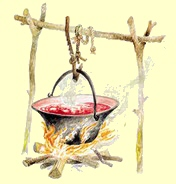

Rohscheiben sind eine Delikatesse
aus Uromas Zeiten - man kennt sie dick oder d�nn. W�hrend die
einen Rohscheiben weiterhin aus dem Sparherd (Bild links)
m�gen, andere kennen sie nur noch
d�nn aus der Plastikt�te und bezeichnen sie Chips, als h�tten
sie die Amerikaner erfunden. Stadtmenschen kaufen sie �ber Ma�
gesalzen, gepfeffert oder mit Paprika scharf gemacht und/oder mit weiteren
Zusatzstoffen angereichert als Appetit- und Durstanreger f�r weitere
Dickmacher.
Einen ungarischen Namen haben die Rohscheiben bis heute
nicht, das deutsche Wort wurde fr�her aus diversen
donauschw�bischen Mundarten ins Ungarische �bernommen und meistens als "Rohschejbni"
ausgesprochen.
Dicke Rohscheiben
bezeichnet man in Deutschland als Bratkartoffel. Sie sind
eine
ideale Beilage zu diversen Braten, wie z.B. Wiener
Schnitzel oder Gefl�gel aus dem Backofen, wie Entenbraten oder
Weihnachtsgans.
Beim Kauf von Chips in der Plastikt�te sollte
man bedenken, was man �berhaupt kauft. In einer T�te gibt es
Chips von einer einzigen Kartoffelknolle so zubereitet, dass
man danach Hunger und Durst bekommt. Rohscheiben kann zu Hause
jedermann auch ohne Kochkenntnisse in max. 15 Minuten
zubereiten und was man dann hat, das schmeckt nach gesunden,
s�ttigenden Kartoffeln. F�r den Preis einer T�te Chips bekommt
man bis zu zwei Kilo, etwa die zwanzigfache Menge einer T�te
Durst- und Hungermacher.
Wir zeigen das folgende Video als
erschreckendes Beispiel daf�r, wie man es nicht machen sollte
und geben unter dem Video Tipps, damit Ihre Rohscheiben
perfekt gelingen:
Fr�her backte bzw. r�stete man die Kartoffelscheiben ohne Fett im Ofen des
Sparherds oder im Steinofen. Ein jeder schmierte eine kleine, individuelle Menge
Fett - Butter, Schweine- oder G�nseschmalz - und streute Salz nach eigenem Gutd�nken darauf.
Wennschon eingefettet oder ge�lt gebacken, die fertigen Chips
sollten auf einem Papiertuch
trocknen und nach der Vorstellung deutscher K�chenlehre mit Gew�rzsalz oder einer
Salz-Paprikamischung bestreut werden. �brigens: Was man in Deutschland als
"H�hnchengew�rz" verkauft, das ist eine Mischung aus Salz und
Paprikapulver - genau ideal f�r Trinkgelage und daher auch f�r die Rohscheiben,
zumindest nach der Vorstellung des Handels im
deutschsprachigen Raum.
Damit man
sowas besser verkaufen kann, erfand man im deutschsprachigen
Raum "ungarisch" f�r diese Geschmacksrichtung. Was daran
ungarisch sein soll, wei� niemand in unserem ungarischen
Bekanntenkreis. Manche vermuten die Werbeaktivit�t von Marika
R�kk f�r das Paprikapulver des Paprikam�hlenbesitzers Kot�nyi
in den jiddisch-kitschigen Operetten der Wiener und Berliner
Theaterszenen der 1930er Jahre.
Pizza und Bratkartoffeln, so auch Rohscheiben ben�tigen gro�e
Hitze beim Backen bzw. Braten, Pizza um die 350�C, aber auch
die Brat- oder R�stkartoffeln erfordern �hnlich gro�e Hitze. Das k�nnen moderne Elektro�fen
nicht, weil sie aus Sicherheitsgr�nden nur bis zu 250�C warm werden.
Es gibt auch Pizza�fen zu kaufen und man k�nnte sie in die
normale Haushaltsherde einbauen, aber die Fabriken spekulieren
lieber mit unversch�mt �berteurten Preisen. Bratkartoffeln
macht man aus diesem Grund bekanntlich in einer hei�en Pfanne.
Teflonpfannen sind wegen ihrer Hitzeunvertr�glichkeit kritisch,
eher als ungeeignet (auch aus gesundheitssch�digendem Grund)
zu betrachten, umso besser sind die neuzeitlichen, keramisch
beschichteten Bratpfannen, die bis zu 400�C "Hitze"
vertragen sollen. Wichtig: Uromas
Sparherd schaffte die ben�tigte Hitze sowohl im Backofen, als
auch oben auf der Gu�eisenplatte, als man die R�st- und
Bratkartoffeln erfand.
Wichtig, wenn man die
Kartoffeln in Fett r�stet: Kaltgepresste Speise�le vertragen
wenig Hitze, �hnlich wie Schmalz. Raffinierte Raps- und
Sonnenblumen�le vertragen die gr��te Hitze, zudem ist Raps�l
cholesterinfrei und billig und das muss schon ein Dorn im Auge
der Agrarindustrie sein, wenn man stattdessen Palmfett und
Butterschmalz f�r die europ�ische K�che erfindet, dabei
vertragen diese weniger Hitze, als es die Werbung verspricht.
Butterschmalz mag bei Schnitzel besser schmecken, Butter
in Speise�l noch besser und ist preisg�nstiger, man muss nur auf
die Idee kommen, der Werbung weniger Aufmerksamkeit zu
schenken. �brigens: Butter vertr�gt genauso wenig Hitze, wie Oliven�l. Wir empfehlen
daher das Raps�l, das geschmacksneutral jedes Gericht beim
Eigengeschmack bel�sst. Etwas Butter oder Kr�uterbutter kann
man auch nach dem Braten zugeben, wenn das einem feiner
schmeckt.
F�r gute
Rohscheiben ben�tigt man gleiche Sorte Kartoffeln. Die als
"vorwiegend festkochend" gekennzeichneten Packungen aus dem
Supermarkt enthalten Lagerreste aus unterschiedlichen
Kartoffelsorten, die der Handel loswerden will, ohne den
kleinen Finger f�r weitere Verbraucherinformation zu r�hren, wof�r der
Packungsinhalt �berhaupt geeignet ist. "Vorwiegend" bedeutet
f�r K�chInnen: nur teilweise geeignet - Finger weg davon!
Die
Kartoffeln f�r Rohscheiben sollte man unbedingt gleichm��ig
schneiden. Bei der geringen Dicke der einzelnen Scheiben sind
geringe Abweichungen mit dem Messer nicht zu vermeiden und diese
vermeidlich geringen Abweichungen sind nicht unerheblich f�r
den gleichm��igen Braterfolg. F�r Rohscheiben eignen sich
Gurkenhobel hervorragend. Auch f�r dicke
Rohscheiben bzw. Bratkartoffeln gibt es Gem�sehobel im Handel.
Zu Uromas Zeiten sparte man noch mit allem, was man zur
Verf�gung hatte. Es galt auch in den herrschaftlichen K�chen:
eine gute K�chin muss sparen k�nnen! Die Kartoffelscheiben
backte bzw. r�stete man damals noch ohne Fett im Ofen oder in
einer handgeh�mmerten Gu�eisenpfanne, die ein Jahrhundert lang
ihre Qualit�t behielt und darin nichts anbrannte. Erst am
Teller nahm man Schmalz oder Butter dazu, Paprika-,
Pfefferpulver, Essig, �l und Salz, evtl. auch Knoblauch standen damals
bei den Donauschwaben an jedem Tisch griffbereit.
Wissenswerte Gesundheitstipps:
Acrylamide - Im �l frittiert,
bilden sich oberhalb von 120�C besonders viele Acrylamide
in allen kohlenhydratreichen Lebensmitteln, wenn in diesen
Lebensmittel der Wassergehalt gering ist, so wie die
Kartoffeln nun mal beschaffen sind. Acrylamide in
Rohscheiben sind daher nicht zu vermeiden. Das wu�ten unsere
Uromas nicht, sonst h�tten wir heute eine L�sung dagegen,
weil heutzutage nicht mehr nachgedacht, vielmehr nur noch
abgekupfert wird aus fremden Rezeptheften. Wer auf
Rohscheiben nicht verzichten will, setzt sich in jedem
Fall einer erh�hten Krebsrisiko aus. Dagegen hilft daheim
nur eine m�glichst kurze Hitzezeit bei Niedrigtemperatur. Damit in den
Chipsfabriken wenig Acrylamide gebildet werden, die von
der Lobby erkorene und vom Gesetzgeber gesegnete bzw.
zugelassene Acrylamid-Grenzwerte eingehalten werden
k�nnen, verwendet man dort eine Backmethode bei niedrigen
Temperaturen nahe 120�C. Da fehlt aber der typische
Kartoffelgeschmack von Rohscheiben, der erst bei gro�er Hitze
entsteht. Unmengen von Salz, Geschmackverst�rkern und
weiteren, auch nicht angabepflichtigen Zusatzstoffen in
den Chipsbeuteln sorgen daf�r, dass die Fabrikchips
trotzdem "schmecken" und man nach jeder Scheibe noch mehr
Hunger und Durst bekommt. Da bleibt "nur" der
Kartoffelgeschmack auf der Strecke.
Transfetts�uren - sind
gesundheitssch�dlich, indem diese unsere Blutwerte -
Blutdruck und Cholesterin - ung�nstig ver�ndern.
Transfetts�uren entstehen, wenn man industriell geh�rtete
Fette zum Frittieren verwendet. Das Thema
"Transfetts�uren" ist hierzulande noch ein Streitthema.
W�hrend in Deutschland die um ihre eigene Gesundheit
besorgten B�rger in den gekauften Medien als "Gesundheitsgurus"
abgestempelt und von der
parlamentarischen Lobby zur L�cherlichkeit verdammt
werden, ist die FDA (Gesundheitsbeh�rde des
Bundes) in den USA bereits soweit, dass sie nach
dem Verbot in mehreren Bundesstaaten nunmehr ein Verbot
k�nstlich geh�rteter Fette im
gesamten Land beabsichtigt.
Glutamat
ist in fast allem enthalten, was haltbar ist und salzig
schmeckt: Salzstangen, Chips, Saucen, Wurst u.a. Was man
isst, ist appetitanregend, schmeckt salzig, aber nicht nach
dem, was man zu essen denkt. Glutamat ver�ndert den Geschmack
von Speisen, aber verst�rkt deren Geschmack nicht, wie es
die Werbung verspricht. Die Chips am Bild links schmecken
nicht nach Kartoffel. Wissenschaftliche Studien belegen,
dass Glutamat das S�ttigungsgef�hl im Gehirn beeinflusst,
indem es die Konzentration des Schlankheitshormons Leptin
verringert. Das �berrumpelte Hirn sendet die Botschaft: iss
noch mehr! Je mehr man schon gegessen hat, umso �fter greift
man zu. Wer nicht denken kann, folgt sein Hungergef�hl bis
der Magen nichts mehr aufnehmen kann. Erh�hte Blutwerte zeigen in
diesem Zustand: Diabetes klopft an der T�r.
Backkartoffeln /
S�tőben s�lt krumpli
Das Wort "Backen" fehlt in der
ungarischen Sprache, so
umschreiben die Ungarn mit halben S�tzen, wo das Backprodukt "gebraten"
wird. So z.B. werden die Grillkartoffeln "auf dem Rost �ber
dem Grill gebratene Kartoffeln" genannt. Bezeichnungen f�r
die Backkartoffeln sind: im Backofen (s�tőben s�lt), im
Steinofen (kemenc�ben s�lt), im Herd (k�lyh�ban s�lt) oder
in der Asche (hamuban s�lt) gebratene Kartoffeln. In
fr�heren Zeiten, als man die Temperatur noch nicht genau
regeln konnte, ben�tigte man viel Aufmerksamkeit, damit die
Backkartoffeln mundgerecht schmeckten. In der modernen K�che
bestimmen Kartoffelgr��e und der Ofentyp die Backzeit. So
ben�tigt man ca. 90 Minuten Backzeit bei 200�C W�rme f�r
gr��ere Kartoffeln.
Beliebt sind die Backkartoffeln weltweit. Fr�her a� man sie
mit Schmalz oder Butter beschmiert und f�r den Genu� sa� die
Familie zwangsweise um die Backstelle herum zusammen. Mit der
Zeit gibt es immer mehr neue Rezepte und die Phantasie in der
K�che kennt keine Grenzen, wie das folgende Video zeigt.
Stadtmenschen, vor allem die vom Smartphone t�glich 24
Stunden lang faszinierten Genres k�nnen die Zeit und Geduld
f�r das Gelingen in der eigenen K�che nicht mehr aufbringen.
Wir haben das folgende Video ausgesucht, weil es beschreibt,
wie die Backkartoffeln noch schneller, in wenigen Minuten in
der Mikrowelle zubereitet werden k�nnen. Das stimmt,
allerdings schafft das nur ein Koch, der tagt�glich unz�hlige
Male im gleichen MW-Herd gleich gro�e Kartoffeln backt.
Aus eigener Erfahrung m�chten wir zum folgenden Video
hinzuf�gen, dass das Backen von Kartoffeln allein im Mikrowellenherd
sehr viel �bung ben�tigt. Den Vertretern von Mikrowellenherden
in den Warenh�usern gelingt es immer, weil sie die gleiche
Prozedur t�glich vielfach vorf�hren und das landesweit
vielerorts monatelang. Je seltener man Kartoffeln backt, umso
seltener wird es gelingen, nach l�ngerer Pause ben�tigt man
einige Versuche, bis die Kartoffeln tats�chlich mundgerecht
gebacken werden, aber schmecken tun sie allein aus der
Mikrowelle niemals so gut, wie aus dem Steinofen, Backofen
oder in der Natur aus der Asche. So werden die Backkartoffeln
in Restaurants - wie auch im Video von einem Koch - in der Mikrowelle nur vorgegart und
dann am Grill oder im Ofen fertig gebacken.
R�stkartoffeln /
S�ltkrumpli
Variante 1:
Gesch�lt, in
Spalten, Scheiben, S�ulen oder W�rfeln geschnitten, mit
Schmalz betr�pfelt auf einem Backblech bei 180-200�C ca. 40
Minuten ger�stet. 2-3 Mal wenden und dabei auf einen fetten
Belag auf allen St�cken sorgen. Beim Servieren Schmalz und
Salz am Tisch bereitstellen, viele m�gen einige
Knoblauchzehen dazu.
Variante 2
mit Rosmarin (Bild links): ist eine neumodische Erscheinung in Ungarn. Zubereitung:
Gesch�lt, in
Spalten, Scheiben, S�ulen oder W�rfeln geschnitten, mit Knoblauchsalz,
Rosmarin und Oliven�l in einer Backschale im Backofen bei
180-200�C ca. 40 Minuten ger�stet. 2-3 Mal wenden und dabei
auf einen fetten Belag auf allen St�cken sorgen.
Bei der traditionell mit
Schmalz zubereiteten R�stkartoffeln werden oft dicke Scheiben von
Bachspeck, dicke Rippen, Kassler Nackenst�cke u.�. mitgebacken und als
vollst�ndiges Gericht verzehrt. Dazu serviert man Salat,
Gurken u.�.
R�stkartoffeln
mit Rosmarin kennt man schon lange in Ungarn, aber Oliven�l
ist eine neumodische Erscheinung.
Vor allem die organisiert, massenhaft einwandernden Neub�rger
verachten Schmalz und verwenden stattdessen Oliven�l, das
bestimmte gesundheitliche Vorteile verursacht, weil man zum
Oliven�l viel weniger Salz konsumiert.
Petersilienkartoffel /
Petrezselymes krumpli
Petersilienkartoffeln geh�ren schon lange auf den Tisch zu
den feinsten Gerichten als Beilage. Bei Braten, wie z.B. dem
Wiener oder Pariser Schnitzel sind sie unerl��lich.
Warum auch immer, die ungarischen Bauer wollten lange mit
den Kartoffeln nichts zu tun haben. Somit ist Ungarn ein von
den letzten L�ndern in Europa, wo Kartoffeln erst in den
1780er Jahren angebaut wurden
- auf Befehl des ungekr�nten K�nigs der Ungarn, Joseph, dem
Sohn von Maria Theresia. Er war seiner
Zeit weit voraus ein moderner K�nig, f�hrte viele
vern�nftige, vor allem wirtschaftliche Reformen durch und
sah in den Kartoffeln eine gro�e Steuerquelle. Ob er schon
das W�sserchen Vodka aus Kartoffeln kannte, das wissen wir
nicht, abh�ngig war er aber bekanntlich. Er vermied jeden
Konflikt im eigenen Land, so setzte er seinen
Anbauzwang mithilfe von staatlicher Unterst�tzung durch.
Wie Petersilienkartoffeln zubereitet werden, zeigt und
erkl�rt das folgende Kurzvideo:
Kartoffelp�ree /
Krumplip�r�
Kartoffelp�ree kennt jeder weltweit. Viele m�gen es lieber,
wenn die Kartoffeln nicht ganz zerdr�ckt werden, dann schmeckt
es eher nach Kartoffeln und schon deswegen kommen die G�ste
nicht auf die Idee, man h�tte das P�ree aus Fertigpulver
gemacht.
Links: G�nsekeule mit Rotkohl bzw.
Blaukraut und Kartoffelp�ree, das am Martinstag (11.11.) auch
in Ungarn gerne verzehrt wird in Gedanken an den Heiligen
Martin aus der r�mischen Provinz Pannonia - heute Westungarn.
Zupfnudeln /
Csipetke
Der Teig f�r Csipetke bzw.
Zupfnudel wird ohne Wasser, ausschlie�lich aus Ei und Mehl
geknetet und mit Salz abgeschmeckt. Beispiel f�r
Zutaten: 1 kg Mehl, 8 Eier, 8 Prise Salz.
Bei Allergie kann das Ei mit Wasser ersetzt werden, dann
aber bitte Hartweizenmehl, m�glichst auch Hartweizengrie�
verwenden. Das Ergebnis im Teller schmeckt �hnlich
bis gleich.
Die Salzmenge im Teig ist
Geschmacks- bzw. Gew�hnungssache. Soll der Mann nachher viel
trinken, dann viel Salz zugeben, soll er gesund bleiben, spart
man mit dem Salz, so viel, man kann. Die Italiener verwenden
f�r uns ungew�hnlich wenig Salz und die Mediziner sagen, das sei der
Grund daf�r, dass der Infarkt in Italien meistens nur vom H�rensagen
bekannt ist.
Csipetke
wird als Garnierung
zum Gulasch bzw. Pörkölt gereicht und auch
in der Gulaschsuppe mitgekocht. Ihre
Herstellungsmethode ist eine zeitaufwändige, mühselige
Handarbeit, die sie aus der
Mode und irgendwann wahrscheinlich in die Vergessenheit drängen wird.
Ohne Butter ist Csipetke
gesünder, weniger
klebrig und
schmeckt vielleicht besser, als unsere Sp�tzle.
Csipetke
wird per Hand Stück für Stück aus dem Nudelteig
gezupft und
zwischen den
Spitzen der Daumen und Mittelfinger zu kleinen, ca. 1 cm dicken
Klößchen gerollt und zunächst auf einem
größeren, mit Mehl bestäubten
Brett verteilt. Die Klößchen werden nun
per Hand mehrmals solange im
Mehl gepresst und gerollt, bis sie relativ hart, aber noch geschmeidig
sind und noch nicht auseinander
rei�en. Ungeübte Finger ermüden dabei schnell. Wenn
der Teig auseinanderrei�t, gibt man ein Ei zur Masse und
soviel Mehl, dass der Teig nicht auseinander rei�t.
Die
hart gedrehten Klößchen werden nun
in einem möglichst kühlen, gut gelüfteten
Raum gelagert, nach ca. 12 Stunden ins
kochende Salzwasser geschüttelt.
Wenn die Csipetke aus dem
kochenden Wasser empor quellen und oben schwimmen, werden sie sofort aus dem
Wasser geschöpft
und in einem Sieb gesp�lt (damit von der klebrigen St�rke
befreit) und abgeseiht.
Übrigens: Csipetke bedeutet Gezupftes und ist identisch mit den
schw�bischen Zupfnudeln. Csipetke wird in Ungarn auf dem Lande
und nur noch in wenigen Restaurants angeboten.
Ungarische
Eiergraupen / Tarhonya
DAS TARHONYA (dt.
Eiergraupe) - hat einen
ungarischen Ursprung, wie viele Ungarn es behaupten und
neulich sogar in Br�ssel zu einem Hungaricum deklarieren
wollten. Da die
Eiergraupen auf dem gesamten Balkan bekannt sind, kann man
davon ausgehen, dass die ungarische Bezeichnung Tarhonya aus der t�rkischen K�che
�bernommen wurde, es kann aber auch sein, dass die Ungarn
wom�glich schon seit anderthalb Jahrtausenden damit leben,
seitdem sich manche ihrer Triebe aus dem Nahen Osten im
heute iranischen Gebiet entfernten. Das
ungarische Wort Tarhonya ist Sprachwissenschaftlern
zufolge persischen Ursprungs und so �hnlich wird auch von
den s�dslawischen V�lkern auf dem Balkan von "Tarana"
gesprochen, ja sogar in Italien kennt man die Trahanas als
Suppeneinlage. Die Eiergraupen sind aber auch im
Schwabenland bekannt, kommen jedoch nirgendwo so oft
auf den Tisch, wie in Ungarn - selten als Suppeneinlage,
meistens sind sie Beilage zu Hauptgerichten, wie Gulasch-
und Paprikaschgerichten, oft sogar zum Schnitzel.
Eiergraupen werden auch in �sterreich
Tarhonya genannt. Dabei handelt es sich um eine heute nur noch in
den erb�rmlichen Pusztagebieten bevorzugte Beilage. Eiergraupen
stellen ein Armutszeichen dar, das in der Roten �ra im
sozialistischen Ungarn seine Bl�tezeit fand und dort immer �fter
nur noch aus Nostalgie verzehrt wird.
In
Deutschland haben die Graupen einen anderen Ursprung
in den Gerstenk�rnern, die aber schon lange, sp�testens
seit den vorletzten kriegsbedingten Notzeiten etwas
vornehm klingend Perlgraupen, in Ungarn als Gerstli (aus
Gerste) genannt werden.
Die traditionelle Herstellung
der Eiergraupen im eigenen Haushalt beherrschen heute
nur noch wenige, eher nur noch die �ltere Generation
im Lande, weil es eine sehr m�hselige harte Arbeit ist.
Eiergraupenherstellerin war ein Beruf, eine Zunft in
fr�heren Zeiten. In wenigen D�rfern gibt es auch heute
noch einzelne, meist alleinstehende Frauen, bei
denen man noch handgefertigte Eiergraupen bestellen
kann. Hierzu muss der Nudelteig (ohne Hefe, wie
Zupfnudel) hart geknetet m�glichst lange, am besten
�bernacht ruhen und darf dabei keinesfalls austrocknen. Die
harte Teigmasse wird �ber ein gro�es Graupensieb (4-5
mm grobmaschig aus d�nnem, aber hartem Drahtseil)
gerieben. Wennm�glich besch�ftigt man auch noch die
G�ste damit, da sonst die Arbeit langsam vorangeht.
Wer kein Graupensieb hat, kann den Teig �ber eine
Gem�sereibe raspeln. Die feinen Graupen werden auf
einem Tisch (evtl. bemehlt) zum trocknen ausgebreitet,
damit sie nach dem Kochen noch etwas Biss haben. Im
Gegensatz zu den industriell hergestellten
Eiergraupen, haben die handgemachten Graupen
unterschiedliche Formen und Gr��en. Sie schmecken
gerade deswegen besser.
Das folgende Video zeigt die
traditionelle Zubereitung der Eiergraupen in der
ungarischen Pu�ta so, wie
diese grunds�tzlich von Frauen ausgef�hrte harte Arbeit
bei g�nstigem Sommerwetter wahrscheinnlich schon seit vielen Jahrhunderten
durchgef�hrt wird. Ideal und daher notwendig f�r die
schnelle Trocknung der Eiergraupen sind hohe Temperaturen
unter sengender Sonne. Ein Graupensieb mit starken
Stahlseilen, wie im Video zu sehen ist, gibt es auch heute
noch in vielen Landh�usern, obwohl die meisten damit gar
nichts mehr anfangen k�nnen:
Die Zutaten im obigen Video:
der 3.500 g Mehl, 30 Eier, Salz.
Dem
staubigen Rest wird meistens noch etwas Wasser zugef�gt, zu
einer Kugel geformt und daraus kurze Stifte gezupft
(Zupfnudeln), die man noch zwischen Daumen und Mittelfinger
rund formt, platt dr�ckt und trocknet oder gleich in der Suppe
verwendet.
Die industrielle Herstellung
der Eiergraupen ist denkbar einfach, indem dickere
Spaghettinudeln extrem kurz geschnitten und unter
Hei�luftgebl�se getrocknet werden.
Die h�usliche
Herstellung der Eiergraupen ist unterschiedlich.
Viele benutzen dabei diverse Maschinen, die von den
Herstellern aufgeschw�tzt werden. Manche Maschinen m�gen
die Arbeit tats�chlich erleichtern, aber keine verk�rzt
die Arbeitszeit in der h�uslichen K�che, indem sie
Mehrarbeit f�r ihre Instandhaltung und Reinigung
verursachen - auch bei gr��erer Menge f�r viele G�ste. Das folgende Video zeigt die
Zubereitung der Eiergraupen auf drei verschiedene Weise in
der modernen K�che. Ob das Kneten maschinell erforderlich
w�re, dar�ber haben wir die gleiche Meinung, wie der
K�chenfachmann im Video: So bleibt die Hand beinahe
sauber!
Kn�pfli / Nokedli
Im
deutschsprachigen Raum: Die W�rter Knobben, Kn�pfli oder Nockerli
bezeichnen die kn�llchenartig geformte Sp�tzle, Knobben in
Bayern, Kn�pfli im Schwabenland, Nockerli und Nockedli in der Schweiz.
In Ungarn: Nokedli
ist die �bliche Bezeichnung in ganz Ungarn, das Wort stammt
aus der Schweiz, wo es wie "Nockedli" oder auch "Nockerli"
geschrieben wird.
Die W�rter Galuska (dt. Galuschka,
polnisch: Galuszka) und
Haluska (dt. Haluschka) stehen f�r die gleiche Beilage und
haben ihren Ursprung in den n�rdlichen Karpaten von Polen �ber
die Slowakei und Ukraine bis nach Transsylvanien.
Es liegt nahe, dass die Donauschwaben das
Rezept und den Namen dieser Beilage mit nach Ungarn brachten.
Wie
auch immer diese Mehlspeise in Ungarn heißt, sie ist absolut
identisch
mit der schwäbischen Spätzle, auch wenn die ungarischen
Touristikprospekte von eigenem
Nationalgericht stolzieren. Butter und Gries geh�ren im deutschsprachigen Raum in den Teig, Gries
wird in Ungarn fast immer ausgespart und Butter, wenn
�berhaupt, durch Margarine ersetzt. Im deutschsprachigen Raum
ist seit einiger Zeit Sp�tzlemehl mit einer K�rnung zwichen
Mehl und Gries erh�ltlich, das man in �sterreich als
doppelgriffiges Mehl oder Dunst bezeichnet.
Den augenf�lligen Unterschied zu Sp�tzle verursachte lange Zeit der
Sieb, durch den der Teig ins kochende Wasser gelassen wird.
Dieser Sieb hatte in Ungarn in der roten �ra nur eine einzige
Form, mit der nur dicke Knobben, die ungarische Nokedli
machbar sind. Etwa 2-3 Generationen sind damit
aufgewachsen, weil es in den Eisenwarengesch�ften
jahrzehntelang nur einen einzigen Sp�tzlesieb (aus
rostendem Blech) mit runden L�chern aus der heimischer
Produktion gab - Bild rechts.
Unser Geheimtipp: Hin- und wieder gab es in den
ungarischen Gesch�ften die beliebtere,
praktische Form
der Sp�tzlereibe, wie am Bild rechts. Wegen des niedrigen
Preises findet man diesen Sieb selten im Handel. Zugleich ist die R�ckseite eine
perfekte Gem�sereibe
- ideal verwendbar z.B. als Apfel-, M�hren- oder Krautreibe.
Genauso gut funktioniert der
Sp�tzlesieb links, der wegen dem niedrigen Preis eher nur im
Onlinehandel erh�ltlich ist.
Das Ergebnis rechts
ist die in Ungarn beliebte Form der Nokedli bzw. Kn�pfli.
Unser Favorit ist
trotzdem die Pasta aus der original schw�bischen
Sp�tzlepresse aus Schweizer Produktion, wie sie bei den
Donauschwaben in Ungarn bekannt ist und im
folgenden Video demonstriert wird. Sie ist eine Art Kartoffelpresse, die durch unterschiedlich gro�e
und unterschiedlich geformte L�cher die f�r Sp�tzle gew�nschte
Diversit�t der Pasta realisiert. Je nach Gericht wird der
Teig weicher oder h�rter geknetet und dementsprechend presst
man k�rzere Knobben oder l�ngere Sp�tzlenudeln.
Zutaten
f�r 5 Personen: 500 g
Sp�tzle- oder doppelgriffiges Mehl (wo nicht erh�ltlich: 150 g Hartweizengrie�
zu 350 g Mehl gemischt, aber normales Mehl ist ebenso
geeignet), 5 Eier, evtl. 1 EL Butter oder Margarine, Salz, Wasser nach Bedarf.
Zubereitung: Mehl, Eier,
Salz und Wasser, evtl. auch Grie� und Butter in einer
Schüssel
mit einem Kochlöffel kurz zu einem geschmeidigen Teig verrühren. Durch die Zugabe von Mehl oder
Wasser kann die Konsistenz bestimmt werden. Aus weichem Teig
erzeugt die Sp�tzlepresse l�ngere Nudeln, aus hartem Teig
kurze Knobben, aber auch aus hartem Teig knn man lange
Nudeln produzieren durch gr��eren Druck auf die Presse.
Ca. 10 Minuten
ruhen lassen, damit das Mehl, aufquellen
kann. Bei Verwendung von Grie� 20 Minuten Ruhezeit einplanen. Nun
soll der Teig kr�ftig geschlagen werden, bis er Blasen
bildet. Die fertigen Sp�tzle sollte man nur solange
kochen, bis sie an die Wasseroberfläche steigen und dann
m�glichst schnell mit einem Schauml�ffel - am besten wie am
Bild rechts - aus dem siedenden Wasser in einen gro�en Sieb
heben, evtl. im warmen Wasserstrahl kurz sp�len und abtropfen lassen.
Wichtig: Die
Sp�tzle bzw. Nudel d�rfen nicht lange im kochenden Wasser schwimmen,
sonst saugen sie Wasser in sich und werden klebrig weich.
Servieren: Nach dem Abtropfen ist es vornehm, die Sp�tzle einige
Zeit lang zum trocknen in einen
lauwarmen Ofen zu schieben. Manche schwenken daf�r die
Sp�tzle kurz in einer hei�en Bratpfanne mit sehr wenig
Speise�l oder Butter, wie im Video oben.
Tipps:
1 Ei pro 100 g Mehl. Man kann mit den Eiern sparen, 2
reichen auch, dann wird aber mehr Wasser ben�tigt, der Teig
und die Sp�tzle werden dann weniger z�h und geschmeidig.
Sp�tzlemehl
ist Dunst und wird in �sterreich "Doppelgriffiges
Mehl" oder "Wiener Griessler" genannt. Der
Dunst bzw. das Sp�tzlemehl ist ein grob gemahlenes
Hartweizenmehl, feiner als Grie�, aber gr�ber als Mehl.
Wenn Sp�tzlemehl nicht erh�ltlich ist, dann hilft ein
Mischanteil von
10-50% Hartweizengrie� im Mehl. - Je h�her der Grie�anteil
ist, umso mehr, bis zu 50g Butter oder Margarine wird ben�tigt.
Bei wenig Grie� kann
man die Butter weglassen. Die Ungarn ersparen den Grie� ganz und
verwenden Weizenmehl pur. Dadurch ben�tigen die
ungrischen Nokedli einen Sp�lgang vor dem Servieren, damit man nicht die
klebrigen Kleie mitessen mu�, worauf bis zu 80% der
Europ�er allergisch
reagieren.
Wissenswert:
Die gr�beren Mehl- bzw. Grie�k�rner nehmen mehr
Fl�ssigkeit, jedoch langsamer auf, als Feinmehl. F�r die
Aufnahme der Fl�ssigkeit ben�tigt der Dunst seine
Ruhezeit. Durch die Verwendung von gr�beren, sog.
doppelgriffigem Mehl wird die Nudel elastisch und ist
ideal f�r schwierige Hefekuchen- und Strudelteige.
Das Kneten kann wesentlich
leichter gemacht werden mit einem Kochl�ffel, als mit
der Knetmaschine im obigen Video. Durch die Ruhezeit
erspart man beim Kneten viel Kraft, 2-3 Minuten reichen
mit dem Kochl�ffel, dann Ruhezeit und danach reichen
weitere 1-2 Minuten mit dem Kochl�ffel, bis im Teig
Blasen gebildet werden.
Ge�bte K�che schnippeln den Teig sp�tzleartig mit einem
langen Messer oder Schaber von einem Sp�tzlebrett ebenso
schnell. Wie das geht, erkl�rt Frau Lutz im folgenden
Video - also Firrle, Firrle, nass und glatt vorstreiche
und immer wieder Neidunga (hineintunken):
Tipp: Bei der Zubereitung von jedem Eierteig
beginnt man immer mit den Eiern, pr�ft sie
alle und notfalls entsorgt die Faulen, bevor sie mit den
anderen Zutaten in Ber�hrung kommen k�nnten.
Die Kennzeichnung von
Eiern in der EU seit 2004 zeigt das Bild rechts. Bildquelle:
Stiftung Warentest.
Nudeln aus Kartoffelteig
Kartoffelkl��e /
Krumpligomb�c
Zutaten: 5-6
mittelgro�e Kartoffeln, 2 EL Hartweizengrie�, 5-6 EL Weizen-
oder Maismehl, 1 TL Salz. Eventuell 2 Eier und auch 1 TL
Natron. Zubereitung:
5-6 mittelgro�e Kartoffeln in
Salzwasser weichkochen, abseihen und ausk�hlen lassen.
Die Kartoffel pellen und in
einem Sch�ssel stampfen oder fein reiben.
2 EL Hartweizengrie�, 5-6 EL
Weizen- oder Maismehl, 1 TL Salz, evtl. 1 TL Natron und
2 Eier dazugeben, kr�ftig durchkneten, bei Bedarf Mehl
dazumischen, bis der Teig geschmeidig zusammen steht.
Zwischen den H�nden Kl��e
formen und in kochendes Salzwasser geben, mit Holzl�ffel
gelegentlich umr�hren, damit die Kl��e nicht am
Topfboden haften bleiben.
Wenn die Kl��e nach 1-2 Minuten
oben schwimmen, noch 2-3 Minuten lang weiterkochen und
mit einem Siebl�ffel absch�pfen.
Tipps:
Allergiker k�nnen auf die Eier verzichten, stattdessen wenig
Wasser verwenden, damit der Teig geschmeidig zusammen steht.
Ohne Ei unbedingt mehr Hartweizenmehl in der
Teigmischung verwenden.
Ohne Ei gekochten Kl��e
kann man einfrieren und werden nach dem Auftauen nicht
klebrig/matschig, sondern auch nach dem erneuten
Erw�rmen noch immer so fest, wie frisch gekocht.
Die Verwendung von Natron geht aus der Mode - aus purer
Bequemlichkeit und weil die Werbung Backpulver und nicht das
preisg�nstige Natron lobt. Durch die Verwendung von Natron
werden die Kl��e weicher, sie stehen trotzdem besser
zusammen. Natron wurde schon von den alten �gyptern in allen
Backprodukten verwendet, seitdem sorgt es gegen Aufsto� und die mit Natron
gekochten Kl��e sind bek�mmlicher, verursachen weniger
Sodbrennen.
Schupfnudeln /
D�d�lle
Ungarische Bezeichnungen f�r Schupfnudel: Krumplis n�dli oder
D�d�lle. -
Das Wort D�d�lle regt auch die Ungarn zum Schmunzeln an. Man kann
es nicht �bersetzen, es hat keine
Bedeutung und hat seinen Ursprung wahrscheinlich in der
Kindersprache. Dabei handelt es sich um die Schupfnudel der
Donauschwaben,
die �ber Bayern und �sterreich bis im gesamten
Ungarnland gut bekannt ist und sich dort zu einer kulinarischen
K�stlichkeit entwickelte. Unter verschiedenen Bezeichnungen wird
D�d�lle sogar von der in Ungarn lebenden slowakischen
Minderheit, von den Palotzen als ihr eigenes Nationalgericht betrachtet. D�d�lle unterscheidet sich von
unseren Schupfnudeln, indem sie nicht
nur w�rstchenf�rmig, sondern kl��chen-, ja sogar pfannkuchenf�rmig
oder wie Schweizer R�sti, sehr unterschiedlich als Beilage oder
als Hauptgericht aufgetischt wird. Laut Grundrezept wird ein mit Mehl angereicherter Kartoffelbrei
gebraten oder gebacken,
aber das Ergebnis am Teller �berspannt alle Stufen von der
Bauernk�che bis in den Sternenhimmel hinein.
D�d�lle ist in weiten
Teilen von Ungarn unbekannt, westlich und s�dwestlich vom
Plattensee geh�rt sie t�glich auf den Tisch. In guten Zeiten
wird sie als Beilage zu Wildgerichten mit Steinpilz u.a.
K�stlichkeiten gereiht, an einfachen Tagen kann D�d�lle das
Hauptgericht sein. D�d�lle gilt als Armutszeichen, weil schon die
Bezeichnung D�d�lle f�r ungarische Zungen ebenso l�cherlich,
ja sogar abwertend klingt, wie f�r Deutsche. Dabei handelt
es sich um das allt�gliche Essen in gro�en Landstrichen. Die Bewohner von Nagykanizsa und Umgebung
bestehen schon lange darauf, D�d�lle sei ihre Landesspezialit�t.
Wie auch immer - nun zum Rezept.
Das folgende Video zeigt die Zubereitung von D�d�lle. Zutaten
und deutsche Beschreibung der Zubereitung siehe unter dem
Video:
Zutaten: 1 kg Kartoffeln (keine
Fr�hkartoffeln!), ca. 400 g Mehl, 1 TL Salz, 1 TL
Pfefferpulver, 1-2 Zwiebeln, 2 EL Schmalz.
Tipp: Die ben�tigte Mehlmenge kann sehr unterschiedlich
sein. Sie ist abh�ngig von der Kartoffelsorte und von der
Menge der restlichen Kochfl�ssigkeit im Topf, die das Mehl absorbieren
soll.
Zubereitung: Die Kartoffeln in wenig Wasser
kochen, das Wasser nicht abgie�en, die Kartoffeln zusammen mit
der Kochfl�ssigkeit im Topf zerdr�cken. Den Kartoffelbrei
allm�hlich mit Mehl verl�ngern und weiterstampfen, bis der
Brei so dickfl�ssig ist, wie nur m�glich. Wichtig ist, dass
die Kartoffelmasse und das restliche Kochwasser hei� sind,
damit das Mehl darin gekocht wird. Am besten stampft man den
Brei in einem Topf �ber einer Feuerstelle mit schwacher
W�rmezufuhr. Zwischendurch salzen und
pfeffern und solange stampfen, bis ein harter Brei entsteht,
der in kleinen Klumpen, wie im Video
gebraten oder gebacken wird.
Variante 1 -
gebraten: Die Zwiebeln kleinhacken, in einer Pfanne im
Schmalz goldgelb anger�sten und die mit Essl�ffel gesch�pften Breikl��e
(mit 2 L�ffeln kann man sie auf gleiche Gr��e formen) darin braten,
wie im Video.
Variante 2 - gebacken:
Die Breikl��e in einer Backpfanne, z.B. R�mertopf verteilen. In
einer Pfanne kleingehackte Zwiebeln goldgelb r�sten und �ber
die Breikl��e gie�en. Bei 180�C ca. 20 Minuten lang
�berbacken. - Manche �bergie�en die D�d�lle zus�tzlich mit
viel Sauerrahm, andere betr�ufeln damit die fertigen D�d�lle
am Teller.
Variante 3 - gebacken: Wie
Variante 2, jedoch reichhaltig zubereitet, so z.B. mit
Schinkenw�rfeln und weiteren Zutaten nach eigenem Gutd�nken
bereichert, gebacken und beispielsweise mit Lauchzwiebeln und
Petersiliengr�n appetitlich garniert.
D�d�lle wird in s�dwestlichen Landstrichen als das Beste auf Erden
betrachtet. Im
Jahre 2004 gr�ndeten einige Bewohner von Nagykanizsa einen
Verein, der die Traditionen pflegen soll, die mit D�d�lle
verbundenen sind. Seitdem veranstalten sie j�hrlich, Anfang
bis Mitte September ein D�d�lle- und Weinfestival, das bisher mit laufendem
Zuwachs stolzieren kann. Das Festival ist zugleich ein
Wettbewerb, wo die besten, weitgehend kulinarische
D�d�lleteller ausgezeichnet werden. Wie kulinarisch D�d�lle
als Hauptgericht oder Beilage
zubereitet werden kann, zeigen die folgenden Bilder vom
gastronomischen Festival:
Sztrapacska ist die ungarische Schreibweise
f�r Strapatschka. Das Wort
entstammt aus dem slowakischen strapačky.
Die im Norden von Ungarn lebende slowakische Minderheit wird
von den Einheimischen Pal�c (Palotzen Volk) genannt und unter
ihnen ist Sztrapacska besonders beliebt. Sztrapacska wird von
den Slowaken auch Haluschka genannt und das zeugt vom polnisch-ukrainischen Ursprung, denn
Haluschka ist in diesen L�ndern weit verbreitet. Auch wenn die
nach nationaler Identit�t strebenden Slowaken daraus ein
eigenes Nationalgericht erkoren wollen, Sztrapacska ist
lediglich eine regionale Bezeichnung f�r Schupfnudel. Soweit
ist Strapatschka eine Beilage.
Strapatschka isst man als Beilage, wie Sp�tzle,
immer �fter jedoch als Hauptgericht, das
weitgehend identisch ist mit den
Topfenfleckerln bzw. T�r�scsusza bei
den Ungarn - K. und K. l�sst gr��en! Der Unterschied zu den
Topfenfleckerln besteht aus Kn�pfli aus Schupfnudelteig statt
Fleckerln aus einfachem Mehlteig und der Bryndzak�se (dt.
Brimsen), eine Art Schafsk�se. Der Brimsen wird von den in h�heren
Lagen des gesamten Karpatengebirges seit dem 13. Jahrhundert
zerstreut lebenden, meist von den Landesherren bestellten Sch�fern
(walachischen Ursprungs (seit 1859
bezeichnen sie sich als Rum�nen) produziert. Als Beilage
serviert, wird der Brimsen in den Schupfnudelteig geknetet,
beim Huptgericht getrennt serviert, am Teller �ber
Strapatschka gestreut und zus�tzlich mit Grammeln getoppt.
Weitere beliebte Varianten von Sztrapacska sind:
Sztrapacska mit K�se (�hnelt K�sesp�tzle).
Sztrapacska
mit Kraut (�hnelt
Krautfleckerln).
Das beste Video, das wir bisher �ber die Zubereitung von
Strapatschka finden konnten. Von den Slowaken wird der
Bryndzak�se urspr�nglich in den Schupfnudelteig geknetet, aber
wenn man - wie immer �fter - daraus ein Hauptgericht � la
Topfenfleckerln zubereitet, dann ist dieses Video gerade
ideal. Hier wird der Schafsk�se getrennt, erst am Teller �ber
die Schupfnudeln verteilt und mit hei�en Grammeln aus
ger�uchertem Speckt getoppt:
Zutaten: demn�chst hier - solang siehe Video.
Zubereitung: demn�chst hier - solange siehe Video.
Der Bubenspitz
hat viele Namen und wird in �sterreich Fingernudel, im
Schwabenland grunds�tzlich Schupfnudel, aber eine Reihe von
ortstypichen Varianten sind dort bekannt, wie Bubensp�tzle,
Bubensspitzle (wie im folgenden Video) u.a.
Das
folgende Video zeigt die Zubereitung von Schupfnudeln
(D�d�lle oder Nudli) f�r den Bubenspitz - das n�chste
Rezept:
Wenn man D�d�lle (dt. Schupfnudeln) in der
gebutterten Pfanne
in ger�stetem Grie� wendet,
bekommt man Bubenspitz. Weil Kinder die Schupfnudelvariante
sehr gerne mit Obstbrei S��speise verzehren, hei�en sie
Bubenspitz.
Der Bubenspitz (Bild rechts)
hat viele Namen und wird in �sterreich Fingernudel, im
Schwabenland u.a. Bubensp�tzle genannt.
Bubenspitz (Bild oben) und Spitzbuben (Bild
rechts) sollte man nicht verwechseln...
Mit dem Alter steigt jedoch die Abneigung, die auf die
Betrachtung als Essen f�r arme Leute beruht, weil D�d�lle (dt. Schupfnudel)
in Ungarn w�hrend der roten �ra in Mensen und
Betriebskantinen ein eint�niges Alltagsgericht zum
Sattwerden waren. Weil man daran wenig verdienen kann,
erh�lt man dieses Gericht in ungarischen Restaurants heute nicht mehr,
umso beliebter sind sie - nach wie vor - zuhause bei Mama.
Kinder und �ltere betrachten es immer �fter als Dessert,
�hnlich wie die s��e Variante der Krautfleckerln.
Zutaten f�r 4 Personen: 500 g Schupf-
oder
Bandnudeln, 80 g Hartweizengrie�, 50 g Butter, 1 Prise Salz, Puderzucker und Obstbrei oder Marmelade.
Zubereitung:
Schupfnudeln in Salzwasser kochen, abtropfen lassen. In Pfanne den Grie� unter
laufender R�hrung auf goldbraun r�sten. Die Butter darin
verr�hren, ca. 100 ml Wasser dazugie�en und langsam k�cheln,
bis der Grie� anschwillt. Die Nudeln dazumischen, alles in
der Pfanne schwenken und
r�hren, bis der Grie� auf den Nudeln gleichm��ig verteilt
ist.
Servieren: Aus der
Pfanne direkt auf den Teller geben, am Tisch mit Puderzucker
bestreuen und Obstbrei oder Marmelade dar�ber tr�pfeln.
Grie�nudeln / Gr�zes t�szta
Grie�nudeln unterscheiden sich in
der Zubereitung in nichts vom Bubenspitz, lediglich die
Nudeln sind anders...
Mit dem Alter steigt
jedoch die Abneigung, die auf die Betrachtung als Essen f�r
arme Leute beruht, weil die Grie�nudeln in Ungarn w�hrend
der roten �ra in Mensen und Betriebskantinen ein eint�niges
Alltagsgericht zum Sattwerden waren. Dabei werden
Grie�nudeln auch heute noch oft mit ger�stetem Grie�
paniert. Weil man daran wenig verdienen kann, erh�lt man
dieses Gericht in ungarischen Restaurants heute nicht mehr,
umso beliebter sind sie - nach wie vor - zuhause bei Mama.
Kinder und �ltere betrachten es immer �fter als Dessert,
�hnlich wie die s��e Variante der Krautfleckerln.
Zutaten f�r 4 Personen: 250 g
Fleckerln oder
Bandnudeln, 50 g Butter, 100 g Hartweizengrie�, 1 Prise Zucker und Obstbrei oder Marmelade.
Zubereitung:
Nudeln in Salzwasser kochen, abtropfen lassen. Butter in der Pfanne
erhitzen Grie� hinzugeben und vorsichtig anr�sten, mit 2 EL
kaltem Wasser aufgie�en und quellen lassen. Nudeln
untermischen und mit wenig Zucker abschmecken.
Servieren: Aus der
Pfanne direkt auf den Teller geben, am Tisch mit Puderzucker
bestreuen und Obstbrei oder Marmelade dar�ber tr�pfeln.
Haluschka und weitere
Strapatschka Varianten
Herencs�ny ist ein Palotzendorf mit 650
Einwohnern slowakischen Ursprungs und einem Dorfmuseum, wo Traditionen gepflegt und
gelegentlich vorgef�hrt werden. Herencs�ny liegt 10 km s�dlich
von Sz�cs�ny an der slowakischen Grenze, in Luftlinie etwa
40 km nord�stlich von Budapest, aber in einem geschlossenen
Bergwaldgebiet so isoliert, dass man von der Hauptstadt �ber
100 km fahren muss, die Ortschaft zu erreichen. Das Dorf ist
auch von den Nachbargemeinden relativ gut isoliert. Die
Kochkunst der Frauen beruht auf uralte Traditionen des
Palotzenvolkes - aus dem
Haluschkateig so oder so, diverse Gerichte auf den Tisch zu
zaubern. In der Dorfk�che erf�hrt man, wie eint�nige, trotzdem
schmackhafte Gerichte jahrhundertelang auf den Tisch gezaubert
wurden. Die Bev�lkrung war immer sehr arm und ern�hrte sich
von gekochten, gebratenen oder sogar gebackenen
Schupfnudel-Varianten. In diesem Dorf sagt man Haluschka, das
Wort Sztrapacska ist hier unbekannt. Der Kartoffelteig wird zu
den einzelnen Gerichten etwas unterschiedlich zubereitet.
Immer mit gekochten, aber dann aus geriebenen oder gestampften
Kartoffeln, je nach Rezept mit mehr oder weniger Mehl und
Eiern gemischt. Wir haben in der Dorfk�che die Zubereitung
folgender Gerichte gesehen:
Krumplis Laska:
Es ist eine Art Pafannkuchen. Aus dem mit Nudelholz
ausgebreiteten Kartoffelteig backt man ohne Fett �ber dem
Sparherd eine Art Pfannkuchen, wie im folgenden Video gezeigt
wird:
Pir�tott leves (R�stsuppe): Haluschka wird im
Suppenteller mit einer klaren Br�he �bergossen. Dazu werden
die kleingehackten Zwiebeln
im Fett anger�stet,
dabei mit Salz und Paprikapulver gew�rzt,
anschlie�end mit Wasser
aufgef�llt und einmal aufgekocht.
Das Fett ist �berhaupt ein
wichtiger Teil der Ern�hrung hier, dabei handelt es sich immer
um Schweine- oder G�nseschmalz, der oft �ppig und hei� �ber die verschiedenen
Haluschkagerichte gegossen wird, so auch in diese Suppe. Echte
Armenk�che, wie eben die Bewohner schon immer gelebt haben,
genauso wie im Schwarzwald und im gesamten Alpengebiet mit
Sp�tzle und sogar in Wien war ein gro�er Teil der Bev�lkerung
froh, wenn sie t�glich eine Frittatensuppe in den aus Spenden
finanzierten Armenk�che bekam. Dar�ber spricht man heute nicht
mehr, in der Literatur und den Medien ist es gewinnbringender,
wenn man aus vergangenen
Zeiten meistens nur �ber das Leben in den Adelsh�usern
berichtet.
Bukta (Buchteln): Wenn zwischen zwei
Haluschka-Hefeteigschichten Pflaumenbrei gelegt, diese rund
ausgestochen und auf einem Blech gebacken werden, dann nennt
man diese Kuchen Bukta und das ist die �bersetzung f�r
Buchteln auf Deutsch.
Herőke (Schmalzgeb�ck):
wird auf Ungarisch zwar "farsangi f�nk" genannt (=Beliner
Pfannkuchen), auch von den Palotzen, ist jedoch nicht das
gleiche Geb�ck.
Beim Herőke wird ein Hefeteig ausgerollt, auf ca. 8x8 cm
Quadrate geteilt, immer in Schmalz (nicht in �l) frittiert und
genauso wie ein Schmalzgeb�ck in Hamburg gelegentlich mit
einem Obstbrei betr�pfelt und immer mit Puderzucker bestreut
genossen - irgendwie doch �hnlich, wie der Berliner und wenn
die Hamburger dieses Schmalzgeb�ck als ihre eigene
Landesspezialit�t anpreisen, dann spricht es f�r die
Internationalit�t aller K�chen.
Frentő (ungarisch: lep�ny = Fladen): Mit
Fladen ist hier ein pizza�hnlicher Kuchenboden gemeint.
Aus dem gewalzten Kartoffelteig wird ein Kuchenboden
vorgebacken, der meistens mit Quark reichlich bedeckt, mit Sauerrahm
begossen und mit
Zimt �ppig bestreut �berbacken wird.
Schlambutz / Slambuc,
�h�m
Schlambutz ist lediglich unser Versuch, den Namen dieses
wenig bekannten Pusztagerichtes f�r Deutsche synonym leserlich zu schreiben.
Das ungarische Wort Slambuc ist serbischen Ursprungs, bedeutet nichts
auf Ungarisch, kein Ungar wei�, was es bedeuten soll, aber so ist dieses Gericht landesweit bekannt.
Die
wenigsten Ungarn wissen, dass es in der Puszta bei Hortob�gy
immer �fter �h�m bezeichnet wird, wo das Gericht als
landestypisch betrachtet wird. Auch das Wort �h�m ben�tigt eine Erkl�rung: Ein Junge
wurde gefragt, ob es ihm schmecke. Er wollte "Aha"
sagen, das die Ungarn oft mit geschlossenen Lippen wie �h�m aussprechen. Da er seinen
Mund voll hatte, kam lediglich ein �h�m heraus - so die
Legende �ber die Bezeichnung �h�m in der Puszta bei Hortob�gy.
Schlambutz ist ein in
Deutschland v�llig unbekanntes, mit dem
Krumplist�szta bzw. Grenadiermarsch
nah verwandtes, regional bekanntes Kesselgericht der Sch�fer
und
Rinderhirten in der Puszta bei Hotob�gy (nahe Debreczin). Die
Verwandschaft beider Gerichte ist nah, lediglich der Kessel als Kochgeschirr
macht den Unterschied aus.
Als Kochgef�� ist ein Kessel erforderlich, in dem nichts
anhaftet. Sie werden aus Schmiedeeisen geh�mmert, aaber auch die
emaillierten oder keramisch beschichteten Kessel eignen sich
hervorragend.

Schlambutz
wird zuerst genauso wie P�rk�lt im Kessel �ber einer
Feuerstelle zubereitet. Zuerst wird viel Fetter Speck zum
schwitzen gebracht und weitgehend zerlassen. In dem so gewonnenen Schmalz r�stet und kocht
man in Scheiben geschnittene Kartoffeln mindestens 30
Minuten lang. Nun werden Fleckerln - evtl. auch wenig Wasser
- dazu gegeben, mit den
Kartoffeln laufend vermischt und noch einmal mindestens 30
Minuten lang gekocht, bis die gar gekochten Kartoffeln und Nudeln die Fl�ssigkeit v�llig in sich
ziehen und dann das gesamte Gericht wie ein Klumpen fest zusammen steht. Nun
wird der Klumpen nach einer alten Sitte 32mal gewendet und
dabei die �u�ere Nudelschicht rosafarbig anger�stet. Gerade
die so anger�steten Nudeln sind eine besondere K�stlichkeit.
Die Zahl 32 ergibt sich aus der Anzahl der Karten in der
Packung. Nach jeder Wende wird eine Karte umgelegt, damit
man nicht schummelt und der Schlambutz so anger�stet wird,
wie nur m�glich. Wie das geht, zeigt das folgende Video, das das Rezept und
die Zubereitung auf Englisch beschreibt.
Vermerk: der m�chtegern Koch verga� alle
Geschmack gebenden Komponente zu nennen. Im einfachsten
Grundrezept steht nur Salz. Ihm sei verziehen, wenn der
verwendete Speck stark salzhaltig ist, wie er in Ungarn als
S�sszalonna bzw. P�kelspeck erh�ltlich ist. Das darin
enthaltene Salz d�rfte f�r den ganzen Kessel ausreichen.
Meistens verwendete W�rzmittel sind Salz,
Zwiebel, Pfeffer- und Paprikapulver, Tomate und Gem�sepaprika. Die im Video verwendeten Fleckerln sind vergleichbar mit den LaSagnaplatten, wie man sie in deutschen
Labensmittelgesch�ften kaufen kann. Ein weiteres Kriterium,
das Wenden des Klumpen wird im Video vernachl�ssigt, wom�glich
wegen des Schwergewichtes im Kessel. Viele Schlambutzkocher
sagen, man darf kein Kochl�ffel verwenden, sondern nur den
Kessel sch�tteln und wenn der Klumpen zusammensteht, dann
beginnt man mit dem Umlegen der einzelnen Karten nach jedem
einzelnen Wendevorgang insgesamt 32mal.
Die Gemeinde N�dudvar, rd. 40 km s�dwetlich von Debrecen, organisiert
seit einigen Jahren �h�m-Kochwettbewerbe und dort
sieht man, dass dieses sehr einfache Pusztagericht mit
diversen zus�tzlichen Zutaten auf wieviele
verschiedene Art und Weise zubereitet werden kann. Meistens
gibt man Tomate, Gem�sepaprika, Wurst, Fleisch, sogar
Scweinehaxe dazu und so n�hert sich das einfache
Kesselgericht Schlambutz dem P�rk�lt oder Kesselgulasch. Das
�h�m-Festival findet bisher etwas ungeschickt im April statt,
weil das �rtliche Strand-Thermalbad erst ab 1. Mai bis Ende
August (t�glich au�er Montag) ge�ffnet ist. Daf�r ist jedoch das
ganzj�hrig ge�ffnete Thermalbad in Hajd�szoboszl�, rd. 20 km
�stlich in Richtung Debrecen f�r motorisierte Touristen
schnell zu erreichen.
.
R�sti
An ungarischen Imbi�st�nden wird
h�ufig R�sti angeboten, so auch am V�r�smaty Platz im Zentrum
von Budapest. Nach unserer Erfahrung bekommt man ungarnweit
Kartoffelpuffer, aber keine R�sti.
Mit dem Begriff R�sti haben die
Ungarn Probleme, denn die �bersetzung w�re P�rk�lt und dieses
Wort steht in Ungarn f�r ein eigenes Nationalgericht, das
unserem Gulasch entspricht. R�sti gilt als
deutschschweizerische Spezialit�t, allerdings in Deutschland
nur in der s�dwestlichen Landesspitze. In anderen Landesteilen
denkt man an Kartoffelpuffer, wenn man R�sti h�rt, so auch in
Ungarn. Um diesen Unterschied zu verdeutlichen, zeigen wir
hier R�sti, die man in Ungarn eigentlich gar nicht kennt, auch
wenn man hier und da vermeintliche R�stis angeboten bekommt.
Es gibt bisher kein ungarisches Wort f�r R�sti.
�hnlich ist der Kartoffelpuffer, allerdings nicht gleich und
diesen Unterschied kennen nicht alle, sowohl in Ungarn, als
auch in Deutschland. Wichtig dabei ist, dass R�sti ein reines
Kartoffelgericht aus geriebenen Kartoffeln ist, das gew�rzt,
aber ohne weitere Zutaten zubereitet wird, wie das folgende
Video zeigt. Es liegt daher nahe, dass man R�sti in Deutschand
am besten als "Schweizer Bratkartoffel" oder z.B.
"Bratkartoffel anders" bezeichnen k�nnte. Ob es sich beim
R�sti um ein eigenst�ndiges Gericht handelt oder eine Beilage
zu Schnitzeln, Frikadellen oder Spiegeleiern,
wie im Video, das entscheiden Sie doch selbst in der eigenen
K�che:
Die Folge von so vielen Bezeichnungen
f�r das gleiche K�chenprodukt in einem kleinen Land ist, dass der Ungar h�chstens
ein oder zwei davon kennt und dumm schaut, wenn er
Kartoffelpuffer, wie auch immer bezeichnet, angeboten bekommt. T�csni wird
wahrscheinlich am h�ufigsten ausgesprochen, aber die meisten
Ungarn kennen auch dieses Wort nicht. Es entstammt aus
"tocsogni", das unserem Hinplumpsen entspricht. Das ist der
Bratvorgang, wenn der Kartoffelbrei in der Pfanne purzelt.
F�r die Demonstration
der Zubereitung haben wir im Internet nach geeigneten Videos recherchiert. Aus
praktischen Gr�nden und als Unikat fanden wir das folgende Video am besten,
weil diese Art der Zubereitung schnell und besonders sauber
zugeht. Das Problem ist hier allerdings, dass der
Kartoffelpuffer kaum noch nach Kartoffel schmecken wird. Es
liegt daher an Ihnen, wie sehr Sie die Kartoffeln zerkleineren
und anteilig verwenden m�gen oder sie nicht vielleicht doch lieber per Hand zerreiben
und so abschlie�end zur Bratmasse mischen:
Zutaten: 1
Zwiebel, 3 Stck.
Kartoffeln, 1 Ei, Salz, Pfeffer, Muskat. Zum Braten: Speise�l,
Butterschmalz oder Butter. Evtl. weitere Zutaten k�nnten
sein: Sauerrahm oder Milch, St�rke, Mehl oder Haferflocken,
geriebene Knoblauchzehe, geraspelter K�se.
Zubereitung: Die hier gezeigte Methode mit
einem handbetriebenen Multizerkleinerer ist ziemlich einmalig
und erspart die Verwendung einer Reihe von anderen
K�chenger�ten, vor allem die verletzungsgef�hrliche Arbeit mit
einer Kartoffelreibe. Auf eine starke Zerreibung der
Bratmasse freuen sich Zahnlose und Gebi�tr�ger, kurzum die
dritte und vierte Generation.
Servieren:
Kartoffelpuffer schmeckt nur warm, allzu hei� sp�rt man nur
hei�en Fett, kalt schmeckt er nicht mehr. Im deutschsprachigem Raum
geh�rt Apfelmus auf den Tisch zum Kartoffelpuffer.
Serviert wird T�csni
in Ungarn h�ufig pur mit
nur einer Knoblauchtunke bepinselt und gesalzen, wie auch der
Langosch. Neumodisch von gesch�ftst�chtigen
Gastronomen aufgeschw�tzt werden
Sauerrahm und/oder H�ttenk�se f�r den Belag, wie auch bei
Langosch. Irgendwie passt das nicht zusammen, aber Gesch�ft
ist Gesch�ft und da mangelt es noch vielfach an Erfahrung bei
den
Ungarn, wo der Wirt, vor allem die Marktbudenbetreiber sich nicht daf�r interessieren, ob es dem
Kunden nach dem Essen noch immer gut gehe.
Übrigens
- T�csnifestivals
werden in Ungarn vielerorts veranstaltet. Den gr��ten Rummel
macht man momentan in der Ortschaft Biri in der N�he der
nord�stlichen Stadt Ny�regyh�za - siehe:
T�csnifesztival
Polenta /
Kukorica m�l�, Puliszka
Polenta ist eine beliebte Beilage
zu unz�hligen Gerichten,
jedoch besser bekannt in s�dlicheren L�ndern, �berall dort,
wo der Mais angebaut wird. Die Rum�nen verg�ttlichen
Polentakl��e, wie die Tschechen und Bayern die Kn�del.
Polenta kann aber auch die Grundlage f�r ein vollst�ndiges
Gericht sein, wie z.B. die Pizzavarianten, die wir hier
unten ohne Kommentar zeigen.
Zubereitet wird die
Polenta in allen H�rtestufen vom gekochten Griesbrei
bis zum gebackenen Maisbrot. Wer damit anf�ngt, sollte
bedenken, dass die Zubereitung vergleichbar ist mit
Grie�brei - man muss flei�ig und elativ lange r�hren, sonst
wird die r�hrende Hand von dem vulkanartig spritzenden Brei
St�ck f�r St�ck verbrannt. Ein Handschuh kann helfen.
Das Rezept, die Zutaten mit Mengenangaben
und die extrem einfache Zubereitung werden mit weiteren
Tipps perfekt erkl�rt im folgenden Video:
Pizzaboden aus Polenta:
Polenta als
Kuchen - Zutaten im folgenden Video: Polenta,
Shiitake Pilze, Zwiebel, Knoblauch, Basilikum, Oregano, Salz,
edels��er Paprika, Oliven�l.
Sie
wollen endlich mal ein Gulasch nach
Originalrezept in Budapest genießen. Dann nichts wie hin.
Das Essen in Ungarn ist fett und schwer, damit muss man einfach
rechnen, wenn man in Ungarn einen Urlaub macht.
Zur
ungarischen Küche
gehört nun mal das Schmalz. Als
Geschmacksträger
bringt es die Zwiebeln und den Paprika zur Geltung.
Es ist viel gesünder, als sogenannte
Ernährungsberater in Deutschland denken, denn
der Mensch kann die genetisch vorhandene Abwehrkraft
gegen den Krebs nur durch fettes Essen und viel Bewegung
stärken.
Niemand sagt, dass man viel essen muss!